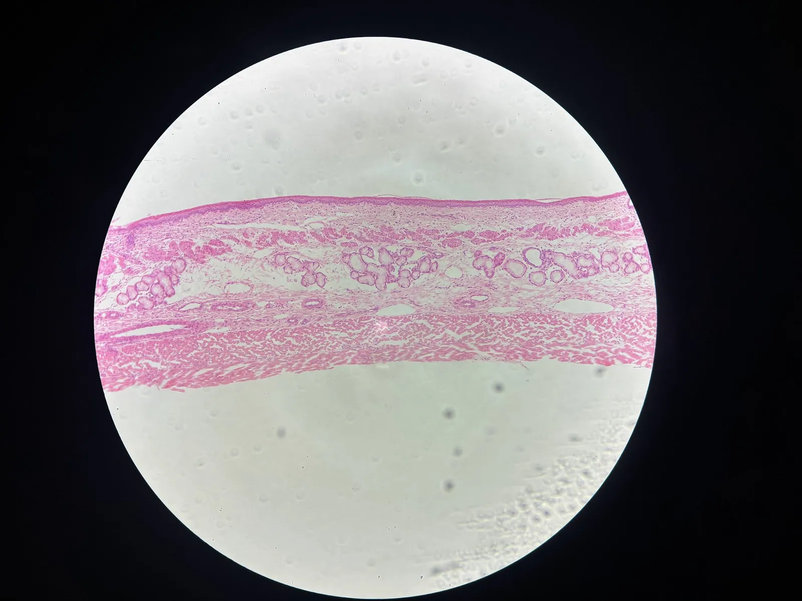
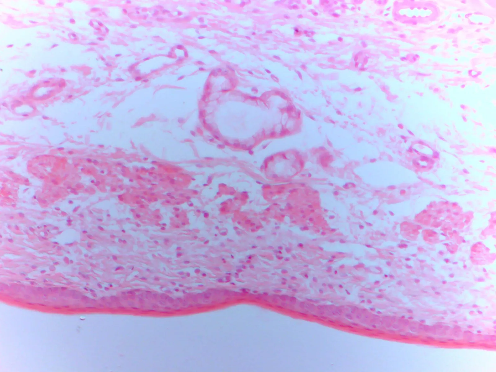
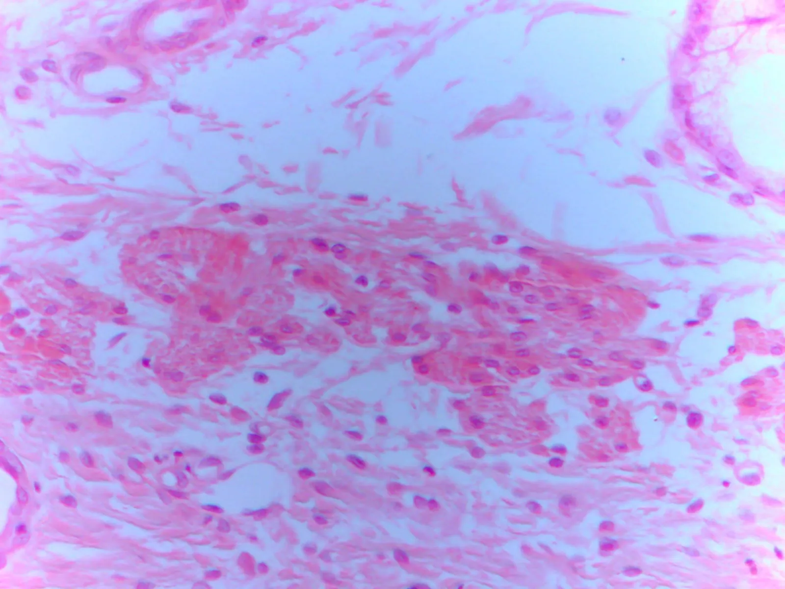
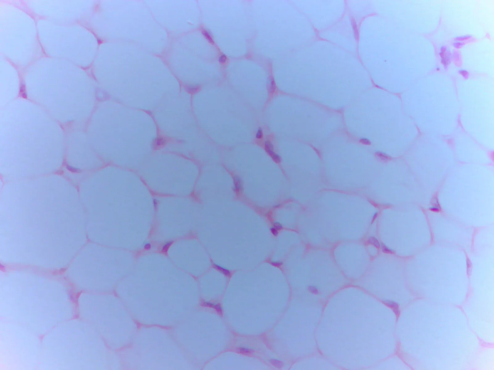
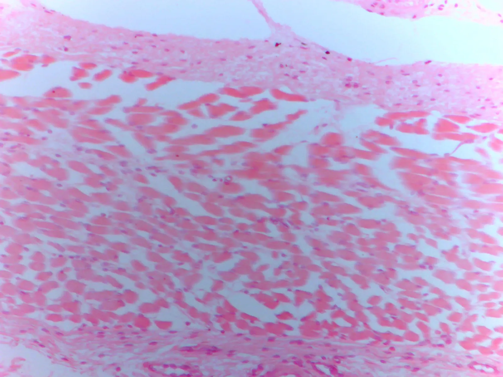

Lâmina 04 · Tecido epitelial
Epitélio estratificado pavimentoso





Toque na imagem para ampliar. No computador, use as setas do teclado para trocar de imagem.
Lâmina 04 · Tecido epitelial





Toque na imagem para ampliar. No computador, use as setas do teclado para trocar de imagem.